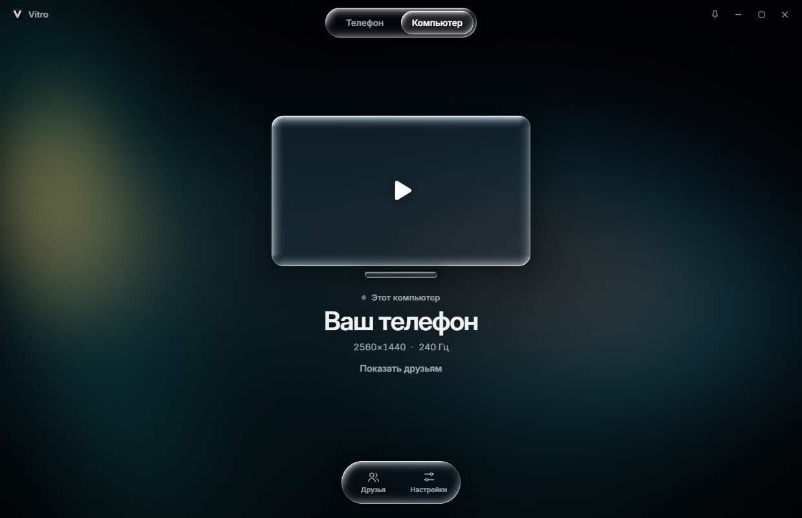
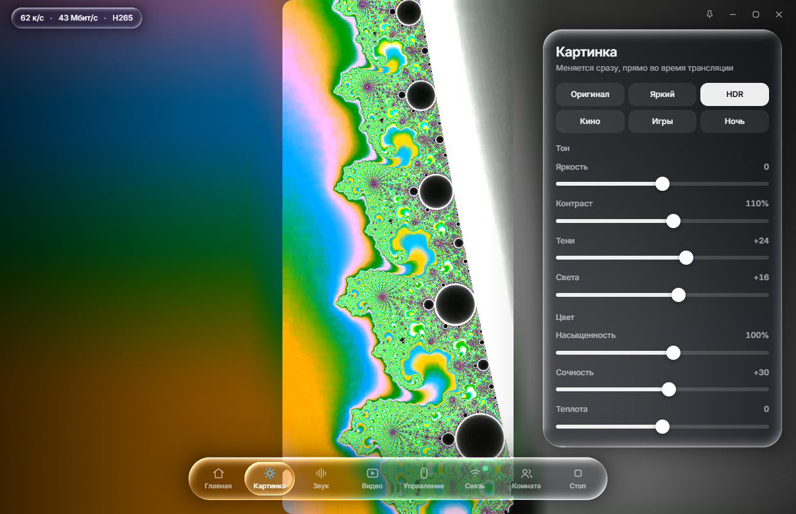
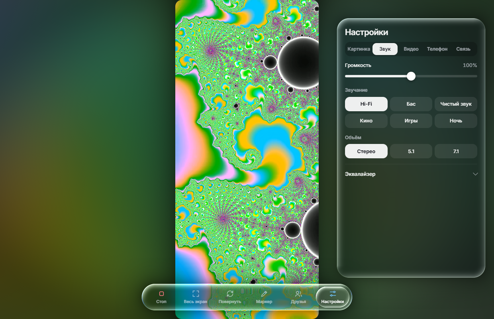
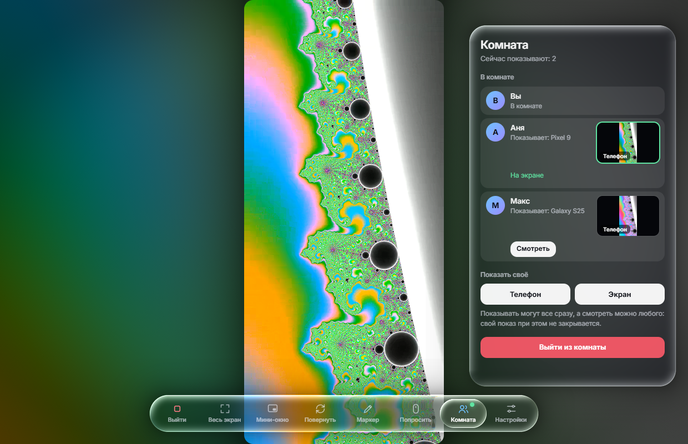
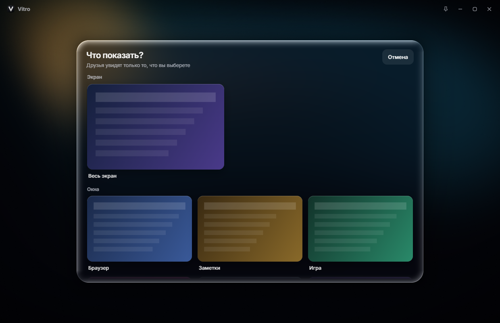

Телефон или компьютер с частотой самого монитора, с несжатым звуком и в родном разрешении. И прямо в окне у друга, без пережатия Discord.
Скачать для WindowsWindows 10 и 11, Android 7 и новее. Звук с Android 11.

Одна кнопка вместо командной строки. Весь путь картинки и звука на компьютере написан заново.
| Раньше | Теперь |
|---|---|
| Чёрные рамки вокруг картинки | Свет от самой картинки, режим «Без рамок», режим «Под монитор» |
| 20 Мбит/с, H.264 | Авто до 120 Мбит/с, H.265, родное разрешение |
| Сжатый звук | Несжатый PCM, пресет Hi-Fi не трогает ни сэмпла |
| Нет звука на Android 16 | Исправлено, способ захвата переключается сам |
| Демонстрация в Discord, текст не читается | Комната: поток идёт другу напрямую |
| 60 к/с при мониторе на 240 Гц | Частота монитора: 240 к/с на мониторе 240 Гц |


Зовёте друга из Steam, и он оказывается рядом с вами. Смотрите телефоны и экраны друг друга в обычном окне: сворачиваете, переключаетесь, играете, а звук идёт дальше.

Остановили показ, сменили телефон на компьютер и обратно: никого не выкидывает, все ждут новую картинку.
У каждого рядом с аватаркой мини-окно с его показом. Нажали и смотрите его, а ваш показ при этом продолжается.
Экраны и окна стеклянными карточками с превью. Никаких системных диалогов и плашек браузера.
Ручка, маркер, стрелка, лазерная указка и цвета на панели слева. Покажите другу, куда нажать.
Даёте его конкретному человеку и забираете в любой момент. Ctrl+Alt+X из любой программы мгновенно обрывает показ.
Перед выдачей управления выбираете, куда нельзя заходить. Запрещённое размыто на картинке, управлять им нельзя. Банки отмечаются сами.
Голосовые чаты не попадают в показ: друг не услышит сам себя.

Дальше можно перейти на Wi-Fi одной кнопкой или по QR-коду: вкладка «Связь».